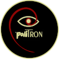

"Nur Schönheit kann Schönheit erkennen..."
..und wie immer liegt dies stets im Auge des Betrachters.

Das Archiv platzt bald aus allen Nähten.
Die Festplatten stapeln sich, und manche sind schon so alt, daß sie den Geist aufgaben. Gutes Material, das vor Jahren dem Zeitgeist voraus war, doch auch mit dem Fortschritt der heutigen Technik jetzt schon wieder veraltet ist.
Und stetig wird Neues kreiert und dieses "Alte" frisch heraus geputzt ..
Als eine gute Übung im Soundmixing und Filmschnitt diente mir einst dieser YouTube-Kanal.
Seit mein Partner aber diese Dimension verlassen musste, habe ich die Pflege jenes Kanals eingestellt, da in diesen Arbeiten eine gewaltige Erinnerungsenergie gebunden ist. ♥
In den aktuellen Kanal "Enza von metaTronics - Mandala-Musik-Gemälde" werden in unregelmässigen Abständen neue Werke eingestellt.
In stetiger Weiterentwicklung..
Auf dem Kanal "poliTRON" findest du Projekte, die gemeinsam mit anderen Künstlern und Musikern entstanden sind.
Die Wortmarke "metaTronics" wurde 2007 für meine Person registriert, womit wir unsere, insgesamt fünf, DVD im Eigenverlag in kleinen Auflagen professionell produzieren und anbieten konnten.
2010 wurde "Politron"
registriert und 2020 als Musiklabel bei der GVL gemeldet.